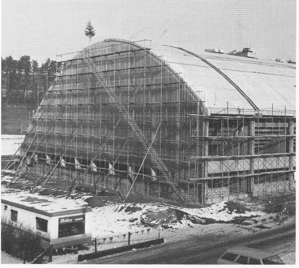
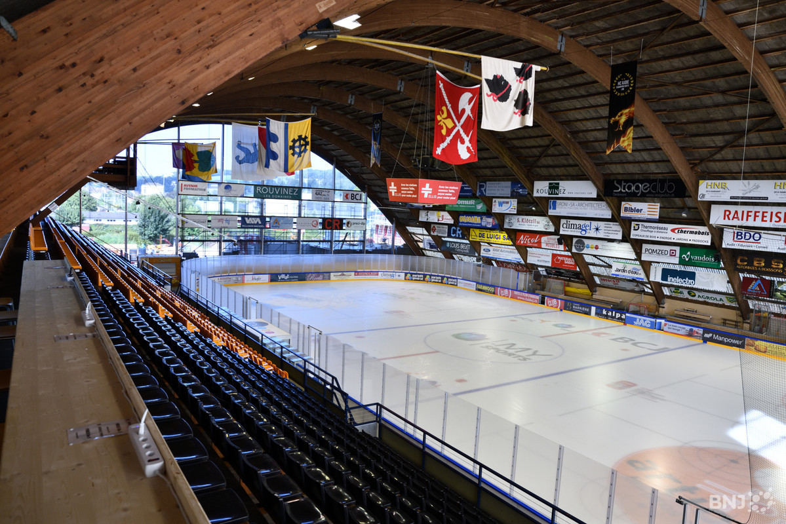
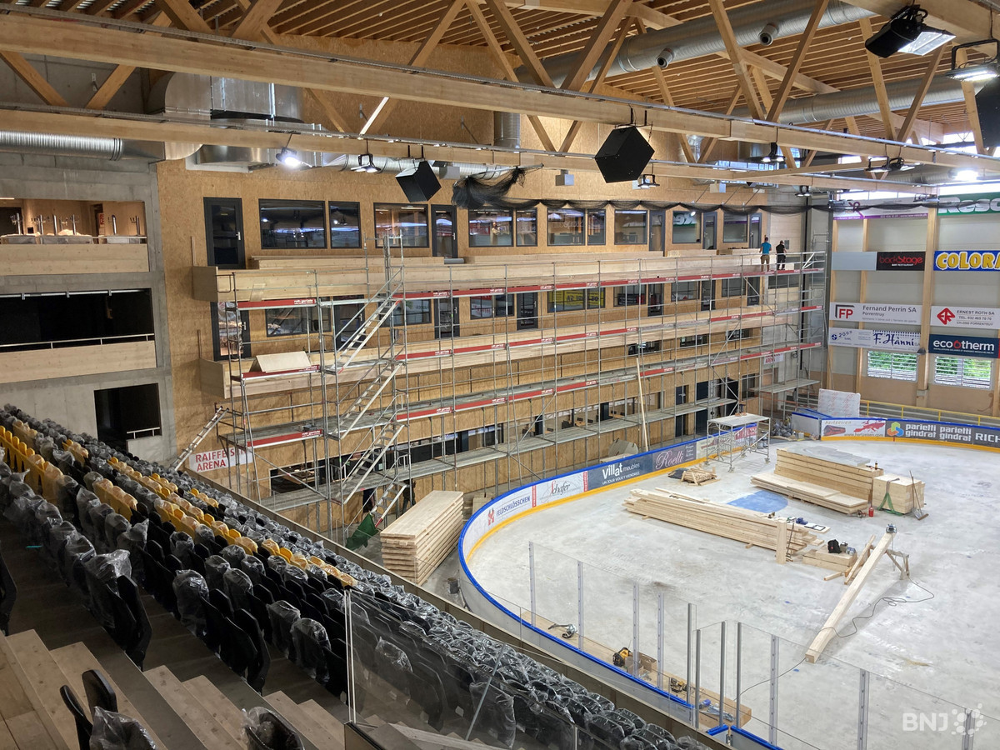
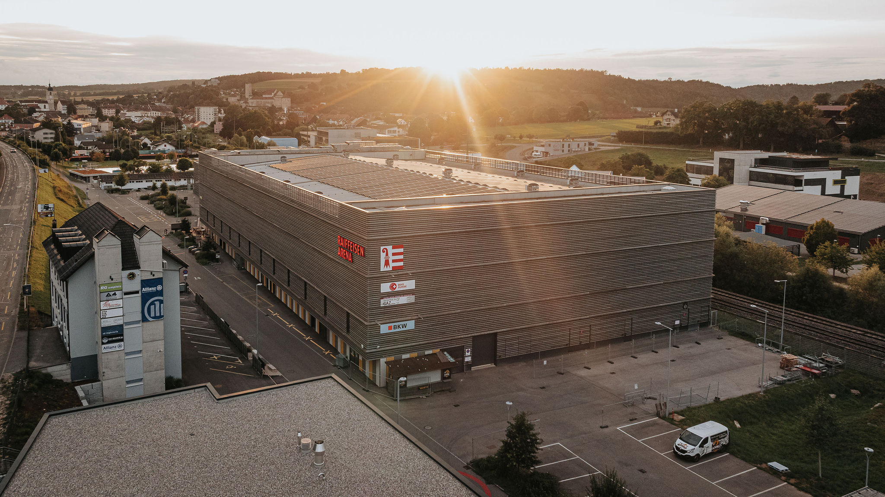
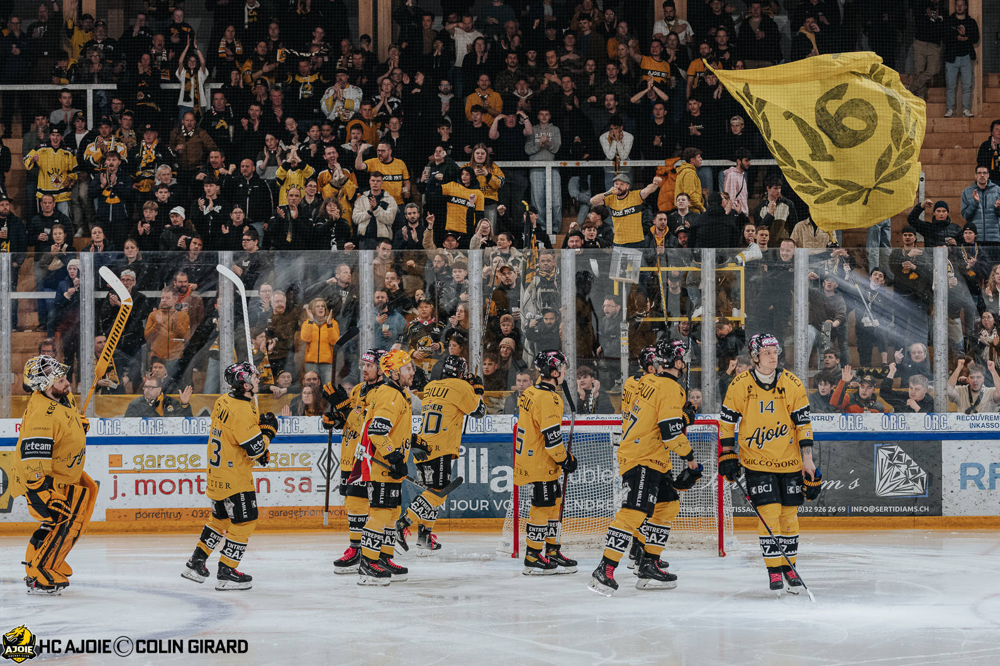

1973 Le Voyebœuf ouvre ses portes
Construite à Porrentruy, la patinoire couverte devient vite un lieu de rassemblement : les délégués du Rassemblement jurassien s'y réunissent encore en 1974.

Le chaudron, usé mais aimé
1er juillet 2018 — 2×OUI
Devenue vétuste et hors normes, l'enceinte reste pourtant chère aux Ajoulots. La population vote massivement le crédit de rénovation : une décision collective, pas un choix imposé.

2019–2020 — Le Voyebœuf disparaît
Pièce par pièce, l'ancienne structure est démontée pour laisser place au nouveau bâtiment. Ce qui existait depuis 1973 a vraiment disparu.

5178 places. National League.
En 2022, la Raiffeisen Arena est inaugurée. Le pari collectif est réussi : le HC Ajoie est promu en National League.

Aujourd'hui, l'Ajoie joue à guichets fermés
Le HC Ajoie joue désormais à guichets fermés dans une arena moderne : le lieu a retrouvé — et dépassé — sa place dans la communauté.